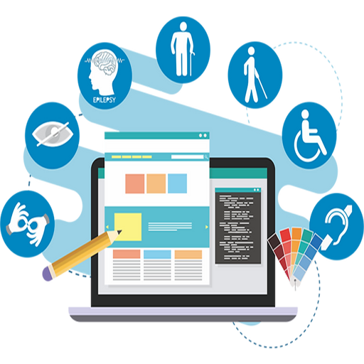

Artigos sobre Acessibilidade na vida cotidiana
Clique nos cartões para saber mais:
A Importância da Acessibilidade na Vida Cotidiana

A acessibilidade é crucial para uma sociedade inclusiva, abrangendo áreas como infraestrutura urbana e digital. Ela beneficia não apenas pessoas com deficiência, mas também idosos e pais com carrinhos de bebê, promovendo igualdade de oportunidades e uma melhor qualidade de vida.
Acessibilidade Digital: Facilitando o Acesso à Informação Online
A acessibilidade digital torna a internet e tecnologias acessíveis a todos, exigindo práticas de desenvolvimento inclusivas. Isso é uma obrigação ética e também uma oportunidade para alcançar um público mais amplo.
Tecnologia Assistiva: Avanços que Facilitam a Vida Cotidiana
A tecnologia assistiva, como leitores de tela e reconhecimento de voz, melhora a independência de pessoas com deficiência. Cadeiras de rodas elétricas, CAA e próteses avançadas também transformam suas vidas. A acessibilidade econômica é essencial para promover uma sociedade inclusiva.